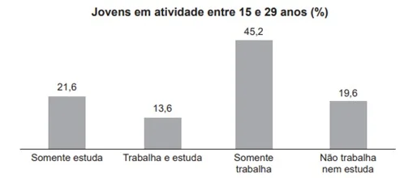
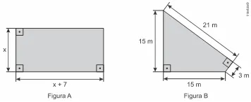

Questão 1 (ENEM 2020)
(Enem 2020). A Pesquisa Nacional por Amostra de Domicílios (Pnad) é uma pesquisa feita anualmente pelo IBGE, exceto nos anos em que há Censo. Em um ano, foram entrevistados 363 mil jovens para fazer um levantamento sobre suas atividades profissionais e/ou acadêmicas. Os resultados da pesquisa estão indicados no gráfico.

A) 114 708.
B) 164 076.
C) 213 444.
D) 284 592.
E) 291 582.
Mostrar resposta
Alternativa correta: Letra C
Questão 2 (enem 2020)
A) A
B) B
C) C
D) D
E) E
Mostrar resposta
Alternativa correta: Letra C
Questão 3 (ENEM 2021)
Aplicativos que gerenciam serviços de hospedagem têm ganhado espaço no Brasil e no mundo por oferecer opções diferenciadas em termos de localização e valores de hospedagem. Em um desses aplicativos, o preço P a ser pago pela hospedagem é calculado considerando um preço por diária d, acrescido de uma taxa fixa de limpeza L e de uma taxa de serviço. Essa taxa de serviço é um valor percentual s calculado sobre o valor pago pelo total das diárias.
A) P = d.n + L + d.n.s
B) P = d.n + L + d.s
C) P = d + L + s
D) P = d.n.s + L
E) P = d.n + L + s
Mostrar resposta
Alternativa correta: Letra A
Questão 4 (ENEM 2016)
(Enem 2016) Um senhor, pai de dois filhos, deseja comprar dois terrenos, com áreas de mesma medida, um para cada filho. Um dos terrenos visitados já está demarcado e, embora não tenha um formato convencional (como se observa na Figura B), agradou ao filho mais velho e, por isso, foi comprado. O filho mais novo possui um projeto arquitetônico de uma casa que quer construir, mas, para isso, precisa de um terreno na forma retangular (como mostrado na Figura A) cujo comprimento seja 7 m maior do que a largura.

A) 7,5 e 14,5.
B) 9,0 e 16,0.
C) 9,39,3 e 16,3.
D) 10,0 e 17,0.
E) 13,5 e 20,5.
Mostrar resposta
Alternativa correta: Letra B
Questão 5 (ENEM 2012)
(Enem/2012) O diretor de uma escola convidou os 280 alunos de terceiro ano a participarem de uma brincadeira. Suponha que existem 5 objetos e 6 personagens numa casa de 9 cômodos; um dos personagens esconde um dos objetos em um dos cômodos da casa. O objetivo da brincadeira é adivinhar qual objeto foi escondido por qual personagem e em qual cômodo da casa o objeto foi escondido. Todos os alunos decidiram participar. A cada vez um aluno é sorteado e dá a sua resposta. As respostas devem ser sempre distintas das anteriores, e um mesmo aluno não pode ser sorteado mais de uma vez. Se a resposta do aluno estiver correta, ele é declarado vencedor e a brincadeira é encerrada. O diretor sabe que algum aluno acertará a resposta porque há:
A) 10 alunos a mais do que possíveis respostas distintas
B) 20 alunos a mais do que possíveis respostas distintas
C) 119 alunos a mais do que possíveis respostas distintas
D) 260 alunos a mais do que possíveis respostas distintas
E) 270 alunos a mais do que possíveis respostas distintas
Mostrar resposta
Alternativa correta: Letra A